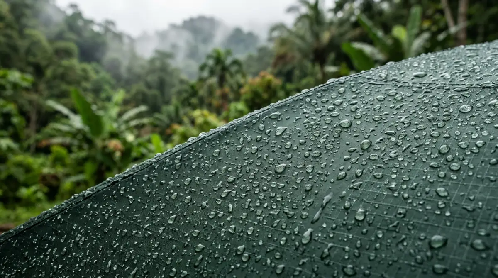

Tenda camping ultralight yang ringan dan kokoh — solusi ideal bagi pendaki yang ingin melangkah lebih jauh tanpa beban berlebih.
Tenda camping ultralight yang ringan dan kokoh — solusi ideal bagi pendaki yang ingin melangkah lebih jauh tanpa beban berlebih.
- Kenapa Harus Pindah ke Tenda Camping Ultralight?
- Mengenal Material "Sultan": Silnylon vs Cuben Fiber
- Silnylon: Si Lentur yang Terjangkau
- Cuben Fiber (DCF): Ringan Maksimal, Harga Profesional
- Trekking Pole Tent: Tanpa Frame, Makin Enteng
- Tips Merawat Tenda di Bawah 1,5 Kg Agar Tahan Badai
- Pemilihan Lokasi (Pitching) adalah Koentji
- Pengencangan Guyline dan Penggunaan Pasak yang Tepat
- Cara Mencuci dan Menyimpan yang Benar
- Penutup
- FAQ
Kamu pasti pernah merasakan momen ini: susah payah sampai di area camp, napas ngos-ngosan, pundak rasanya mau copot, dan lutut gemetar minta ampun. Niatnya pergi ke gunung untuk healing dan melepas stres, tapi realitanya badan malah hancur lebur karena beban keril yang kelewat batas. Sering kali, biang kerok dari penderitaan ini adalah perlengkapan tidurmu sendiri.
Bayangkan jika lima atau sepuluh tahun dari sekarang, kamu terpaksa gantung sepatu lebih cepat karena cedera lutut yang menumpuk akibat memaksakan diri membawa beban seberat kulkas dua pintu. Sayang banget, kan? Padahal, ada banyak puncak indah yang belum kamu sapa. Mengganti sistem tidurmu dengan tenda camping beraliran ultralight bukan sekadar tren fesyen gunung, melainkan investasi jangka panjang untuk kesehatan sendimu. Kalau kamu tidak mulai meringankan bebanmu dari sekarang, kapan lagi kamu bisa benar-benar menikmati perjalanan tanpa dihantui rasa sakit?
Kenapa Harus Pindah ke Tenda Camping Ultralight?
Coba bayangkan kamu sedang lari mengejar kereta commuter line di pagi hari, tapi di punggungmu ada tas berisi tumpukan dokumen proyek, laptop tebal, dan tumbler dua liter. Berat, bikin stres, dan membatasi ruang gerakmu, kan? Nah, membawa tenda camping konvensional dengan frame fiberglass yang beratnya bisa mencapai 3-4 kg itu rasanya persis seperti membawa tumpukan revisian dari bos yang nggak kelar-kelar ke puncak gunung. Bikin pundak kaku dan mood berantakan.
Di sinilah filosofi ultralight hiking masuk untuk menyelamatkan kewarasan kita. Konsep utamanya sederhana: kurangi beban dasar (base weight) semaksimal mungkin tanpa mengorbankan keselamatan. Dengan tenda berbobot di bawah 1,5 kg, ruang di kerilmu jadi lebih lega, punggung tidak cepat pegal, dan yang paling penting, kamu bisa melangkah lebih jauh dengan energi yang tersisa. Kamu bisa menikmati pemandangan kabut pagi dengan senyum lebar, bukan dengan meringis menahan sakit punggung.
Mengenal Material "Sultan": Silnylon vs Cuben Fiber
Untuk memangkas berat hingga drastis, pabrikan pembuat perlengkapan outdoor membuang material berat seperti polyester standar dan beralih ke kain berteknologi tinggi. Kalau di dunia kerja ini ibarat upgrade dari PC jadul ke ultrabook generasi terbaru; ringan tapi performanya gahar. Mari kita bedah dua material paling populer di dunia tenda camping ringan ini.
Silnylon: Si Lentur yang Terjangkau
Silnylon adalah singkatan dari Siliconized Nylon. Sederhananya, ini adalah bahan nilon tipis yang dilapisi silikon cair dari kedua sisinya. Hasilnya? Kain yang sangat anti air, licin, dan super ringan.
Kelebihan utama silnylon adalah daya tahannya terhadap robekan dan harganya yang masih masuk akal untuk kantong pendaki pekerja kantoran. Namun, material ini punya satu kebiasaan unik: dia gampang sagging alias melar saat basah atau terkena suhu dingin di malam hari. Jadi, jangan kaget kalau pas malam tendamu kencang, eh subuh-subuh bentuknya sudah agak keriput seperti baju belum disetrika. Solusinya simpel, kamu hanya perlu keluar sebentar untuk menarik ulang tali pengencang (guyline) agar kembali tegang.
Cuben Fiber (DCF): Ringan Maksimal, Harga Profesional
Kalau kamu sering dengar istilah Dyneema Composite Fabric (DCF), dulunya bahan ini disebut Cuben Fiber. Material ini awalnya dibuat untuk layar kapal pesiar. Kalau silnylon itu sekelas Honda Civic, maka DCF ini adalah Ferrari-nya material tenda.
DCF tidak ditenun seperti kain biasa, melainkan lembaran polimer yang dijepit kuat. Bobotnya sangat tidak masuk akal (bisa kurang dari 500 gram untuk satu tenda utuh) dan dia tidak melar sedikitpun saat basah. Tenda yang dipasang kencang di sore hari akan tetap kencang di pagi hari. Kekurangannya? Harganya bisa bikin gaji sebulan numpang lewat, dan material ini rentan terhadap tusukan benda tajam meskipun sangat kuat menahan tarikan.

Tenda camping ultralight dengan desain minimalnya mampu berdiri kokoh bahkan di kondisi cuaca yang menantang, asalkan dipasang dengan teknik yang tepat.Trekking Pole Tent: Tanpa Frame, Makin Enteng
Salah satu cara paling brilian untuk memangkas berat tenda camping adalah dengan membuang frame bawaannya. Loh, lalu tendanya berdiri pakai apa? Jawabannya ada di tanganmu: trekking pole atau tongkat daki.
Konsep ini dalam dunia kerja mirip dengan prinsip multitasking yang efisien—satu alat untuk dua pekerjaan. Daripada membawa tiang aluminium yang hanya berfungsi saat tidur, mengapa tidak menggunakan tongkat yang membantumu berjalan di siang hari untuk menegakkan rumahmu di malam hari?
Desain trekking pole tent biasanya mengharuskan kamu untuk mematok sudut-sudut tenda terlebih dahulu, lalu memasukkan tongkat daki ke titik tengah atau dua sisi tenda untuk mengangkat atapnya. Karena mengandalkan tegangan dari tali (guyline) dan pasak, tenda jenis ini tergolong non-freestanding. Artinya, ia tidak bisa berdiri sendiri di atas permukaan keras seperti beton atau kayu tanpa bantuan patokan. Namun, di tanah pegunungan yang gembur, tenda jenis ini sangat kokoh dan aerodinamis.
"Beralih ke ultralight bukan berarti mengorbankan keselamatan. Ini tentang belajar menjadi lebih cerdas dalam memilih dan menggunakan perlengkapan."
— Filosofi Ultralight HikerTips Merawat Tenda di Bawah 1,5 Kg Agar Tahan Badai
Banyak orang skeptis, "Tenda setipis tisu begitu, kalau kena badai di atas gunung apa nggak terbang?" Faktanya, kekuatan tenda camping ultralight tidak terletak pada ketebalan kainnya, melainkan pada keahlian pemakainya. Sama seperti punya software canggih di kantor, kalau user-nya tidak tahu cara pakainya, ya percuma. Berikut adalah cara merawat dan mendirikan tenda ringan agar kokoh menghadapi cuaca ekstrem.
Pemilihan Lokasi (Pitching) adalah Koentji
Tenda ultralight bukan bunker beton. Jangan sengaja mendirikannya tepat di puncak punggungan yang terbuka tanpa pelindung. Pilihlah lokasi camp yang tertutup secara alami, misalnya di balik pepohonan tebal, semak besar, atau batu besar. Formasi alam ini berfungsi sebagai penahan angin (windbreaker).
Selain itu, perhatikan arah angin. Jika kamu memakai tenda dengan desain limas (pyramid), pastikan sisi yang paling landai menghadap ke arah datangnya angin. Ini membuat angin mengalir mulus melewati atas tenda, bukan menghantamnya secara frontal layaknya dinding.
Pengencangan Guyline dan Penggunaan Pasak yang Tepat
Tenda non-freestanding hidup dan mati dari tegangan tali. Pasanglah pasak dengan sudut 45 derajat menjauhi tenda untuk cengkeraman maksimal ke dalam tanah. Jangan pelit membawa pasak cadangan. Untuk tenda ultralight, gunakan kombinasi pasak V-shape (untuk tanah gembur) dan pasak titanium tipis (untuk tanah berbatu).
Jika badai datang, manfaatkan semua titik guyline tambahan yang ada di tendamu. Ikatkan pada batu besar atau akar pohon jika tanahnya terlalu lembek akibat badai hujan. Tenda yang terpasang kencang tidak akan berisik mengepak-ngepak ditiup angin, sehingga tidurmu bisa lebih nyenyak.
Cara Mencuci dan Menyimpan yang Benar
Sepulang dari gunung, jangan pernah menyimpan tendamu dalam keadaan basah atau lembap di dalam tas kompresi. Itu sama saja dengan membiarkan jamur dan bakteri mengadakan rapat tahunan di kain tendamu, yang pada akhirnya merusak lapisan anti air (coating polyurethane atau silikon).
Cara terbaik merawatnya adalah dengan mendirikannya di halaman rumah, lalu semprot dengan selang air ringan. Jangan gunakan deterjen keras, apalagi sikat cuci baju! Cukup usap dengan spons lembut pada bagian yang terkena lumpur.
Untuk penyimpanan jangka panjang, jangan masukkan tenda camping ke dalam karung kecilnya. Lipat longgar atau gantung di dalam lemari yang tidak lembap. Material ultralight yang terus-terusan ditekan dalam waktu lama bisa mengalami kerusakan struktur pada lipatannya.
Penutup
Gunung-gunung itu tidak akan pernah pergi ke mana-mana, tapi fisik dan persendian kita punya masa kedaluwarsa. Terus memaksakan diri membawa beban berat hanya akan mengurangi umur panjang kita dalam menikmati alam. Beralih ke tenda camping jenis ultralight memang butuh adaptasi, mulai dari cara mendirikannya hingga penyesuaian budget yang tak bisa dibilang murah.
Namun, cobalah ingat kembali momen ketika kamu bisa berjalan santai di tanjakan terjal, bernapas dengan lega, dan masih punya tenaga ekstra untuk menyeduh kopi sambil menikmati sunrise. Pengalaman tanpa rasa sakit itu jauh lebih berharga daripada harga tenda itu sendiri. Jadi, sudah siapkah kamu mengurangi beban di keril dan punggungmu untuk perjalanan berikutnya?
FAQ — Tenda Camping Ultralight